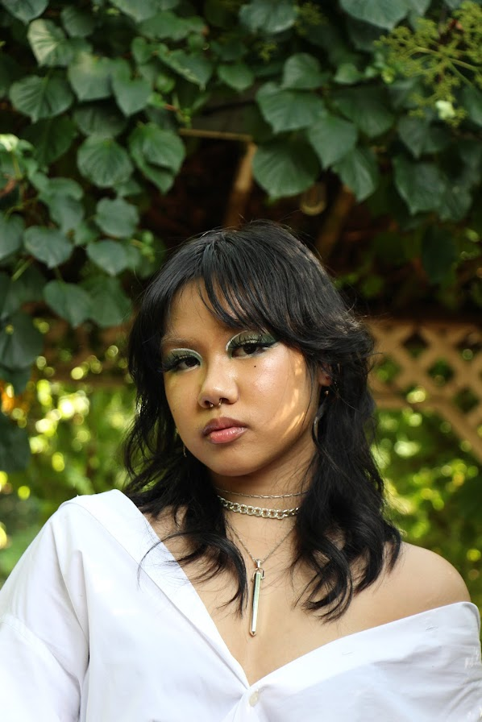

Hi! Welcome to my webpage :)
Things to know about me:
- My name is Ross
- I was born in Philippines, raised in DC
- I'm a computer science major

| Education |
Work experience |
| St. John's University |
Psychology Associate's |
| Reston hospital |
Anesthesia technician |
Programming skills
Favorites and hobbies
My hobbies currently include crocheting, competitive weightlifting, playing videogames and working with my club!
This is my current favorites
Song
Movie
"
Show
Here's some more information about my favorite show!